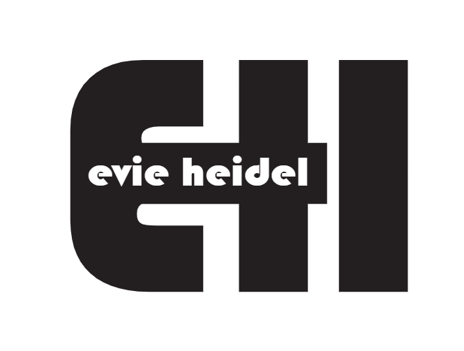

Evie Heidel
About Information
All About Me
Hello Everyone! My name is Evie and welcome to my website. On here, you will find everything that is on a resume and so much more. Included but not limited to: work experience, schooling, some writing samples, media samples, and some other cool things that I think are super cool.
So who am I? That is the question, I’m sure that we are all here to find out. Well, since you asked so nicely, I am a 22 year old college student who is about to turn beginner adult in just 1 short month. Yes, I’m talking about GRADUATION! After my undergraduate degree is over and I close this chapter of the book, I will be moving onto (now say it with me) Corporate America! Whoot Whoot! Yeah! Living the high life baby. You heard it hear first, I will be wasting away in an office cubicle come August. On the bright side, the job I have will be so painstakingly boring so that I can fill up my time doing my true passion, Writing!
My dream job is to become a screenwriter, movie director, and intimacy coordinator for the film industry, and for that to happen, I need to build my portfolio. Over this next year, I will be building my creative portfolio so that I can use it and the works to apply for film school in 2026, which would then give me connections and familiarize myself with the movie making process.
Now, I’ve talked about myself quite a bit up to this point, and I would say something funny like “now enough about me” however, this is MY website so I’m going to keep going, if you don’t mind.
I have 3 pets, my dog: Epic and my two guinea pigs: Whiskey and Turbo that I share with my loving partner. In my free time I like to craft and emborder, rewatch tv shows like Criminal Minds and New Girl, and show my partner very common movies that somehow he has never seen before, like Harry Potter or Forrest Gump. I also enjoy indulging in a table top board game from time to time. Catan, Betrayal at House on the Hill, and Machi Koro are just some of my favorite go tos. Fun fact about me: when I was 15, I competed in a National Qualifying Catan Tournament and made it to the top 4 players, or the winner’s table. Everyone else I was playing with was well into their 30s or even 40s and had no idea how I had gotten there. What can I say, I’m just that good. I also enjoy hunting, fishing, and loving everyday, one of the many things that Luke Bryan and I have in common.
ANYWHO: I feel like I’ve talked your ear off for at least 6 minutes. (I pity your partner if you think 6 minutes is forever) but I really should move on… you however have to keep reading through this pretty sick awesome website that I cooked up here. I’ll leave you to it!
- University of Wisconsin Eau Claire; Resident Assistant
2023 to Present
Manage 25-30 residents per semester, coordinate and execute over 10 events for residents and staff per semester, oversee desk and security scheduling and training, manage vending behind the Residence Hall’s front desk, work on selection/hiring and banquet committees, and earned Resident Assistant of the Year for the 2023-24 school year
- University of Wisconsin Eau Claire; Study Abroad Intern
2023 to Present
Assists in events around campus to promote Study Abroad, meets with students that were interested in going abroad, manages and coordinates the social media accounts, and advocates for programs and students around the world.
- Menards Order Pick Up Team Member
2024 to Present
Pulling and preparing orders for delivery and Buy Online-Pick Up at Store orders, providing friendly and helpful service to customers, assisting with their shopping needs, and answering questions, communicating effectively with customers and other team members about order status and any issues that may arise, and working efficiently and effectively to ensure that orders are prepared and delivered in a timely manner.
- Volume One Magazine Internship
Sept. 2024 to Dec. 2024
Contributed over 15 articles about community happenings, issues, and accomplishments, interviewed sources to gain accurate information for stories, and collected and produced 2-3 articles in a bi-weekly schedule.
- Radtke Contractors; Administrative Assistant
2020 to 2023
Handled employee records with the Human Resources Department, gained knowledge in the program Sage and AutoCAD, assisted in payroll, and disigned vinyl cutouts and disigns of the company logo.
Schooling
- University of Wisconsin Eau Claire
2021 to Present
Bachelor of Arts,English Creative Writing Major,Journalism, Multimedia Communications, and Marketing Minors, American Sign Language and aspiring EDI Certificates, 3.5 cumulative GPA
- University of Winchester
Aug. 2022 to Dec. 2022
Studied abroad and traveled and experienced a multitude of different cultures.
Tooting My Own Horn
Awards
- Resident Assistant of the Year 2024
- Best Short Film 2021
Certificates
- Social Media Marketing
- Digital Marketing
- Digital Advertising
- Forkift
Skills
- Microsoft Excel
- Microsoft Word
- Microsoft Teams
- Microsoft Outlook
- Adobe Illustrator